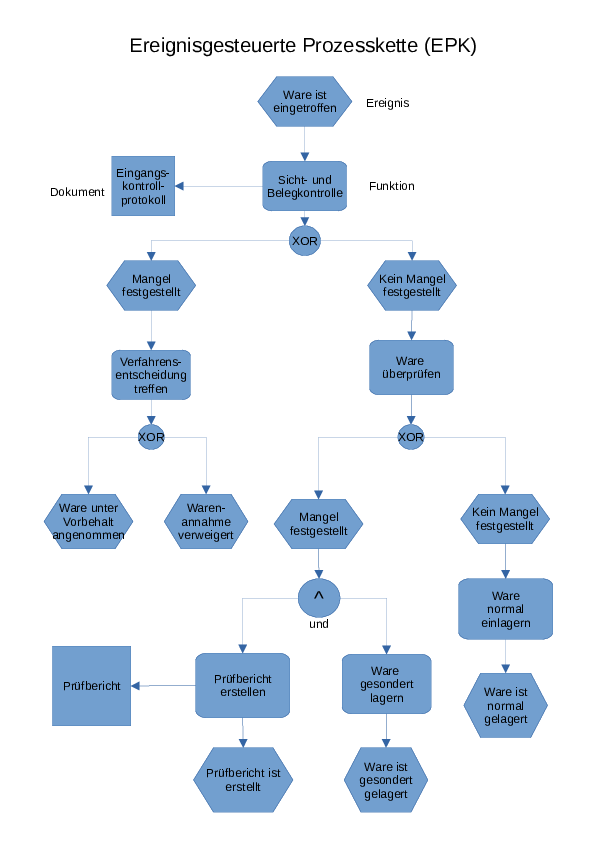

Prozessmodelierung im Qualitätsmanagement
KOM-ITIL
Sebastian Meisel
Einführung
Die Prozessmodellierung ist ein Schlüsselwerkzeug im Qualitätsmanagement und dient der systematischen Darstellung und Analyse von Geschäfts- oder Systemprozessen. Durch die Verwendung verschiedener Diagrammtypen und Notationen können komplexe Abläufe und Strukturen visualisiert und besser verstanden werden. Dies erleichtert nicht nur die Kommunikation zwischen den Stakeholdern, sondern ermöglicht auch die Identifikation von Optimierungspotenzialen. In diesem Dokument werden verschiedene Methoden der Prozessmodellierung vorgestellt, darunter EPK-Diagramme, UML-Diagramme, Flussdiagramme, PAPs und BPMN. Jede Methode hat ihre eigenen Stärken und Anwendungsbereiche, die im Folgenden detailliert erläutert werden.
EPK-Diagramme
Ereignisgesteuerte Prozessketten (EPKs) sind ein Standard für die Modellierung von Geschäftsprozessen. Sie kombinieren Ereignisse und Funktionen.

Abbildung 1: EPK
UML-Diagramme
UML bietet verschiedene Diagrammtypen für die Prozessmodellierung, darunter Aktivitäts- und Sequenzdiagramme.
Abbildung 2: UML: Von MetaMarph - Eigenes Werk, CC BY-SA 3.0
Flussdiagramme
Flussdiagramme sind einfache Darstellungen von Prozessen und deren Abläufen, oft mit Entscheidungspunkten.
Abbildung 3: Flussdiagramme zum PDCA-Zyklus
PAPs (Programmablaufpläne)
PAPs sind speziell für die Darstellung von Algorithmen und logischen Abläufen in Softwareprozessen. Sie können abgewandelt auch zur Prozessmodelierung verwendet werden.

Abbildung 4: PAP
BPMN (Business Process Model and Notation)
BPMN ist ein Standard für die Modellierung von Geschäftsprozessen und bietet eine reiche Syntax.
Abbildung 5: BPMN